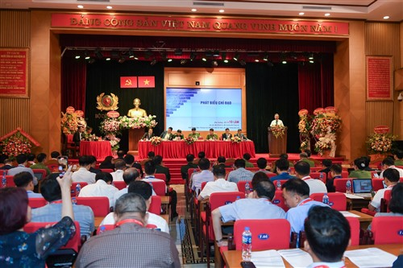
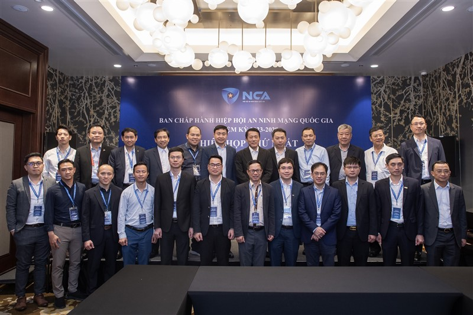

Mạng lưới có tư cách pháp nhân độc lập, trực thuộc Hiệp hội nhằm cung cấp dịch vụ đào tạo, bồi dưỡng, huấn luyện, nâng cao trình độ, nhận thức, kiến thức, chứng chỉ, kỹ năng về an ninh mạng cho tổ chức, cá nhân.
Hiệp hội An ninh mạng quốc gia được thành lập tháng 9/2023, là tổ chức xã hội - nghề nghiệp của công dân và tổ chức Việt Nam hoạt động trong lĩnh vực an ninh mạng. Sứ mệnh và tầm nhìn của Hiệp hội không chỉ tạo ra lợi nhuận kinh tế mà phải hướng tới mục tiêu trở thành động lực cho sự nghiệp xây dựng và bảo vệ Tổ quốc.
Đại hội đại biểu toàn quốc lần thứ nhất của Hiệp hội An ninh mạng quốc gia diễn ra ngày 8/9 đã bầu ra Ban chấp hành Hiệp hội và thông qua chương trình, phương hướng hoạt động nhiệm kỳ 2023-2028.

Đại hội đại biểu toàn quốc lần thứ nhất, nhiệm kỳ I (2023 - 2028)

Ban Chấp hành Hiệp hội An ninh mạng quốc gia nhiệm kỳ 2023 - 2028 chụp ảnh lưu niệm tại Phiên họp lần thứ nhất